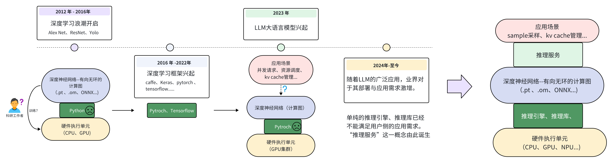

大模型推理框架概述#
Author by：杨小珑
大模型的推理框架是 LLM 应用需求暴增后出现的产物，也是当今 LLM （LLM）推理部署过程中最重要的组件。所以本节将对大模型的推理框架进行简单的介绍，并初步对认识当下主流大模型推理框架的特点。
推理框架概念理解#
对于接触过深度学习的同学来说，提到“框架”可能首先想到的是 pytorch、tensorflow 等深度学习框架。而对于了解过 AI 模型部署的同学，还了解过一些如 TensorRT 的深度神经网络推理引擎。那么现在所谓的大模型“推理框架”与这些传统的概念之间有什么联系和区别呢？
接下来将简单梳理深度学习的发展历程，来从需求的角度理解到底什么是大模型推理框架以及为什么现在需要大模型推理框架。

深度学习框架起源#
从图（大模型发展）可以看到，自 2012 年 AlexNet 问世之后，大量科研领域的工作者开始研究深度学习。此时如果使用像 Numpy 这样的 python 数学库来进行深度神经网络的训练，会面临很多麻烦。例如如何利用 GPU 进行加速？如何对整个网络进行反向传播求梯度？...等等。在这样的需求背景下，各式各样的为深度学习而搭建的框架开始涌现。其目的就是为了方便开发人员快速搭建、训练出自己想要的神经网络。
时至今日 Pytroch 框架基本上成为了学术界首选的深度学习框架。而 Pytroch 能赢得大家喜欢的原因也很简单，那就是在此阶段，深度神经网络大大部分用户都是“科研人员”。对于他们来说，简单、易用、兼容性好就是评判一个框架最主要的标准。至于到底哪个框架运行的更快、更轻量化，绝大部分人们都不是很在乎。
LLM 应用需求爆发#
随着 2023 年 GPT4 问世之后，LLM 的巨大潜力使得深度学习真正“出圈”。各行各业开始关注 LLM 模型的发展与应用。至此人们对于深度学习的需求不再仅仅是“训练”，更多的用户需要一些更高效的“推理需求”。在大量的个人用户以及云服务厂商等应用侧的需求推动之下，如何将一个动辄几十上百亿参数的模型高效的部署、如何进行多卡集群的联动、合理利用硬件资源等便成为了关键的问题。显然这些需求都不是 Pytroch 这样以“简单、易用”的训练为目的框架能够解决的问题。所以自 2024 年之后，以推理服务和推理引擎构成的大模型推理框架开始不断涌现。
推理引擎、服务、框架概念区分#
在进行后续对推理框架的对比介绍之前，需要明确“推理引擎”、“推理服务”和“推理框架”之间的区别和联系。正如下图所示，大部分推理框架包含了“推理服务”和“推理引擎”两大部分。

其中，推理引擎部分主要是用来优化大模型在推理时，关于硬件资源的利用率、效率等偏底层的优化。也就是 runtime 运行时的优化。有的是以加速库的形式进行优化、也有例如 TVM 这样的深度学习编译器，都可以称之为推理引擎。而推理服务则是偏向应用层的例如 KV cache 的管理、模型的 sample 采样策略甚至是用户对话的 Web 界面等等。例如 ollama 则是一个典型的推理服务，它主要为用户提供一键式运行环境、Web 界面等偏上层应用的服务，而底层后端则是有 llama.cpp 作为 backend 提供推理支持。
但是也有部分如推理框架如 Lmdeploy 只包含推理引擎。或者 llama.cpp 虽然是 ollama 的推理引擎，但其自身也有关于 llm 的服务支持，也被看作是一个推理框架。所以在后文中，除了特别情况下，统一将这些用于部署大模型的库、框架、引擎等都笼统的称为“推理框架”。
大模型推理加速目的#
接下来需要明确作为一个大模型推理框架，其首要目的是什么？
明确核心的目标，才能设计出一个好的推理框架，而不是在一些次要的方向上进行过多的优化。在这里可以大致将推理框架的目的总结为两个方向：那就是高吞吐和低延迟。而这两点在通常情况下属于鱼和熊掌不可兼得的关系，需要进行设计平衡。
例如对于一个云服务器厂商来说，希望服务器集群可以拥有尽可能多的并发吞吐能力，也就是同时能够处理尽可能多的用户的请求。但如果设置同时处理过多的用户请求，则会导致单个请求的推理总时长增加。显然对于用户来说其希望能够在一次询问后，尽快得到想要的答复。尤其是对于现如今的思考模型（Reasoning Model），一次简单的询问可能会产生数百个 Token，过慢的推理延迟是用户所不能容忍的。所以如何在保持较高吞吐量的前提下，为用户的单批次请求提供更低的延迟，是云服务器场景下大模型推理框架的核心诉求。
不过对于边缘侧来说，例如个人 PC 或者边缘嵌入式设备，这样的场景下往往并没有过多的并发请求。大部分用户只关心一次推理请求的延迟时间。所以对于在这样边缘场景下运行的大模型框架来说，往往首要考虑的是推理的延迟，而不是推理的吞吐能力亦或者两者的平衡。
推理框架对比介绍#
这里将会对业界主流的推理框架进行简单的介绍，后面将会以 vLLM、SGLang 等业界主流的大模型框架进行展开其框架架构。
推理引擎 |
Star(k) |
Contributors |
Support Models(familys) |
Languages |
|---|---|---|---|---|
10.2 |
164 |
26 |
Python(79.7%)、Rust(15.5%) |
|
49.5 |
1207 |
72 |
Python(85.3%)、Cuda(9.4%) |
|
15.0 |
478 |
29 |
Python(88.0%)、C++(5.2%)、Cuda(4.7%) |
|
81.7 |
1165 |
63 |
C++(63.4%)、C(11.4%) |
|
10.7 |
233 |
52 |
C++(94.4%) |
|
6.5 |
113 |
30 |
Python(61.7%)、C++(21.8%)、Cuda(15.4%) |
(注:表格信息收集与 2025 年 6 月 12 日)
接下来将借助上面这个表格来逐个进行对比了解当下一些比较流行的推理框架的基本情况:
TGI（text-generation-inference）#
它是用 Huggingface 推出的用于大模型推理的一个框架。其最大的特点是作为 Huggingface 官方推理框架，享受到了 Huggingface 的生态生态便利，可以做到开箱即用。比较值得注意的是而该推理框架的编程语言采用了 Python+Rust 形式，其中使用 Rust 进行后端设计与优化。但也正是因为这一点，导致很多 Python 开发者难以使用该框架进行二次开发与优化，加上该框架本身投入的开发人员较少，导致该社区的参与者相对较少，只有一百六十个左右。总的来说，TGI 有以下特点：
TGI 宣称使用了 pagedattention,但是实际吞吐性能一般，预分配显存时浪费严重，batch_size 无法增长。
TGI 的 cpu 和 gpu 调度串行模型，导致 cpu 调度计算时 gpu 闲置。吞吐性能变差。
TGI 使用 rust 来实现调度逻辑，导致广大开发者无法快速上手进行二次开发优化。
自身开发人员投入不够，版本更新太慢。
vLLM#
该项目最初由加州大学伯克利分校(（UCB）)的 Sky Computing Lab 所开发的项目，现如今已经发展成为一个由学术界和工业界共同贡献的开源社区项目。事实上 vLLM 已经成为 llm 业界推理的标杆框架之一了。而该推理框架有如下几个特点：
有着大量且稳定的开发者，作者基本为在读博士生，在 github 上的 Star 仅次于 llama.cpp，但 Contributors 是所有推理框架中最多的。因此 vLLM 对于模型的支持以及功能特性都是最完善的。
社区活跃度最高，github 上 issue 和 pr 都很多。大量 paper 都是以 vLLM 作为 baseline 来开发 demo，因此各种新技术的引入 vLLM 是具有更大优势的。
基础的各种优化以及进阶的权重量化、kv 压缩、speculate decode、chunked prefill、prompt cache、constrained decoding 等功能都是完备的。
SGLang#
该项目也是由加州大学伯克利分校(（UCB）)的团队开源创建的，其借鉴了包括不限于 vLLM、LightLLM、FlashInfer 等推理框架与引擎，是一个以极致吞吐为目标的推理框架。虽然该框架的 star 数量以及 Contributors 不及 vLLM，但是其设计活跃度并不低，并且作者团队也在积极维护开发者生态。其有如下几个特点：
SGLang 吞吐性能最优，通过多进程 ZMQ 传输中间数据来 cover 掉 cpu 开销高负载下 gpu 利用率可以到 80% 以上。
SGLang 代码可拓展性很高，主流功能都有支持的情况下，代码比 vLLM 清晰简单很多，对于二次开发来说是很重要的。
SGLang 开源维护者积极地回复 issue，而且开发节奏快，有些功能还不太完善的地方下一个版本基本马上就更新了。
llama.cpp#
该框架最开始是一个由 Georgi Gerganov 个人创办的一个 c++高性能推理框架，随着该项目受到越来越多人的关注和支持，现如今已经变成 ggml 开源生态组织的项目，而不再属于其个人。该框架与其他大模型推理框架最显著的区别是，其专著与在边缘侧场景的推理部署（如个人 pc、手机等边缘嵌入式设备）。所以该框架可以高效的在包括苹果 mac 系列芯片在内的很多 arm 设备、以及各种边缘加速器上高效运行。其特点可以概括为以下几点：
轻量级、无依赖。该框架仅仅使用自己的 ggml 作为张量库进行构建，无任何第三方库的依赖，使得开发者二次开发难度大大降低。
丰富的后端支持：支持 x86、arm、Nidia_GPU、AMD_GPU、Intel_GPU、Vulkan、NPU_CANN 等等。
支持 CPU AVX 指令集进行矢量计算加速、cpu 多核并行计算、CPU+GPU 混合计算。
支持低精度量化：1.5bit、2 bit、3 bit、4 bit、5 bit、6 bit 和 8 bit 整数量化，可加快推理速度并减少内存使用。
TensorRT-LLM#
该框架是英伟达官方推出的针对自家 nvidia 系列产品而优化的 llm 推理框架。值得注意的是，该框架最开始推出时包括核心的调度机制等代码都没有开源，属于半开源的状态，直至 2025 年 3 月 22 日才进行了完全的开源，成为开源框架。该框架支持 pytroch 和 TensorRT 两种类型的后端推理，可由用户自行选择。
lmdeploy#
该框架由 MMDeploy 和 MMRazor 团队联合开发，是涵盖了 LLM 任务的全套轻量化、部署和服务解决方案。该框架和 vLLM 和 SGlang 的一个区别是其 python 的使用占比只有一半左右，其中大量使用了 c++进行底层构建与优化。该框架的特性如下：
相比 vLLM 和 sglang 的 python 实现，lmdeploy 调度和执行 runtime 代码使用了 C++ 实现
cpu 调度策略优，高负载下 gpu 利用率稳定在 95%
对多模态模型支持很好，支持大量的多模态模型
对国内 GPU 厂商的硬件支持较好
开发人员较少，功能比 vLLM 和 sglang 来说功能还是不太丰富。